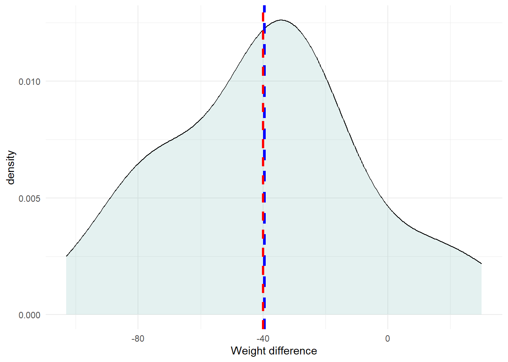

library(rstatix)
library(gtsummary)
library(here)
library(tidyverse)19 Paired t-test
A paired t-test is used to estimate whether the means of two related measurements are significantly different from one another.
Examples of paired study designs are:
- measurements collected before and after an intervention in an experimental study
- twins, husbands and wives, brothers and sisters, pairs of eyes
- matched cases and controls
- a cross-over trial in which each patient has two measurements on the variable, one while taking active treatment and one while taking placebo
When we have finished this Chapter, we should be able to:
19.1 Research question
The dataset weight contains the birth and discharge weight of 25 newborns. We might ask if the mean difference of the weight in birth and in discharge equals to zero or not. If the differences between the pairs of measurements are normally distributed, a paired t-test is the most appropriate statistical test.
19.2 Packages we need
We need to load the following packages:
19.3 Preraring the data
We import the data weight in R:
library(readxl)
weight <- read_excel(here("data", "weight.xlsx"))We calculate the differences using the mutate() function:
weight <- weight %>%
mutate(dif_weight = birth_weight - discharge_weight)We inspect the data:
glimpse(weight) Rows: 25
Columns: 3
$ birth_weight <dbl> 3250, 2680, 2960, 3420, 3210, 2740, 3250, 3170, 2970,…
$ discharge_weight <dbl> 3220, 2640, 2940, 3350, 3140, 2730, 3220, 3150, 2890,…
$ dif_weight <dbl> 30, 40, 20, 70, 70, 10, 30, 20, 80, 103, 84, 42, -15,…19.4 Assumptions
19.5 Explore the characteristics of distribution of differences
The distribution of the differences can be explored with appropriate plots and summary statistics.
Graph
We can explore the distribution of differences visually for symmetry with a density plot (a smoothed version of the histogram):
weight %>%
ggplot(aes(x = dif_weight)) +
geom_density(fill = "#76B7B2", color="black", alpha = 0.2) +
geom_vline(aes(xintercept=mean(dif_weight)),
color="blue", linetype="dashed", size=1.4) +
geom_vline(aes(xintercept=median(dif_weight)),
color="red", linetype="dashed", size=1.2) +
labs(x = "Weight difference") +
theme_minimal() +
theme(plot.title.position = "plot")
The above figure shows that the data are following an approximately symmetrical distribution. Note that the arethmetic mean (blue vertical dashed line) is very close to the median (red vertical dashed line) of the data.
Summary statistics
Summary statistics can also be calculated for the variables.
Summary statistics
We can utilize the across function to obtain the results across the three variables simultaneously:
summary_weight <- weight %>%
dplyr::summarise(across(
.cols = c(dif_weight, birth_weight, discharge_weight),
.fns = list(
n = ~n(),
na = ~sum(is.na(.)),
min = ~min(., na.rm = TRUE),
q1 = ~quantile(., 0.25, na.rm = TRUE),
median = ~quantile(., 0.5, na.rm = TRUE),
q3 = ~quantile(., 0.75, na.rm = TRUE),
max = ~max(., na.rm = TRUE),
mean = ~mean(., na.rm = TRUE),
sd = ~sd(., na.rm = TRUE),
skewness = ~EnvStats::skewness(., na.rm = TRUE),
kurtosis= ~EnvStats::kurtosis(., na.rm = TRUE)
),
.names = "{col}_{fn}")
)
# present the results
summary_weight <- summary_weight %>%
mutate(across(everything(), round, 2)) %>% # round to 3 decimal places
pivot_longer(1:33, names_to = "Stats", values_to = "Values") # long format
summary_weight# A tibble: 33 × 2
Stats Values
<chr> <dbl>
1 dif_weight_n 25
2 dif_weight_na 0
3 dif_weight_min -30
4 dif_weight_q1 20
5 dif_weight_median 40
6 dif_weight_q3 70
7 dif_weight_max 103
8 dif_weight_mean 39.6
9 dif_weight_sd 32.3
10 dif_weight_skewness -0.16
# ℹ 23 more rowsweight %>%
dlookr::describe(dif_weight, birth_weight, discharge_weight) %>%
select(described_variables, n, na, mean, sd, p25, p50, p75, skewness, kurtosis) %>%
ungroup()# A tibble: 3 × 10
described_variables n na mean sd p25 p50 p75 skewness
<chr> <int> <int> <dbl> <dbl> <dbl> <dbl> <dbl> <dbl>
1 dif_weight 25 0 39.6 32.3 20 40 70 -0.157
2 birth_weight 25 0 3076. 248. 2960 3150 3210 -0.291
3 discharge_weight 25 0 3036. 248. 2880 3100 3220 -0.219
# ℹ 1 more variable: kurtosis <dbl>As it was previously mentioned, the mean of the differences (39.64) is close to median (40). Moreover, both the skewness and the kurtosis are approximately zero indicating a symmetric and mesokurtic distribution for the weight differences.
Normality test
Additionally, we can check the statistical test for normality of the differences.
weight %>%
shapiro_test(dif_weight)# A tibble: 1 × 3
variable statistic p
<chr> <dbl> <dbl>
1 dif_weight 0.974 0.742The Shapiro-Wilk test suggests that the weight differences are normally distributed (p=0.74 > 0.05).
19.6 Run the paired t-test
We will perform a paired t-test to test the null hypothesis that the mean differences of weight equals to zero.
Paired t-test
Our data are in a wide format. However, we are going to use only the dif_weight variable, inside the t.test():
t.test(weight$dif_weight)
One Sample t-test
data: weight$dif_weight
t = 6.1428, df = 24, p-value = 2.401e-06
alternative hypothesis: true mean is not equal to 0
95 percent confidence interval:
26.32139 52.95861
sample estimates:
mean of x
39.64 t.test(weight$birth_weight, weight$discharge_weight, paired = T)
Paired t-test
data: weight$birth_weight and weight$discharge_weight
t = 6.1428, df = 24, p-value = 2.401e-06
alternative hypothesis: true mean difference is not equal to 0
95 percent confidence interval:
26.32139 52.95861
sample estimates:
mean difference
39.64 weight %>%
t_test(dif_weight ~ 1, detailed = T)# A tibble: 1 × 12
estimate .y. group1 group2 n statistic p df conf.low conf.high
* <dbl> <chr> <chr> <chr> <int> <dbl> <dbl> <dbl> <dbl> <dbl>
1 39.6 dif_w… 1 null … 25 6.14 2.40e-6 24 26.3 53.0
# ℹ 2 more variables: method <chr>, alternative <chr>19.7 Present the results in a summary table
Show the code
tb1 <- weight %>%
mutate(id = row_number()) %>%
select(-dif_weight) %>%
pivot_longer(!id, names_to = "group", values_to = "weights")
tb1 %>%
tbl_summary(by = group, include = -id,
label = list(weights ~ "weights (grams)"),
statistic = weights ~ "{mean} ({sd})") %>%
add_difference(test = weights ~ "paired.t.test", group = id,
estimate_fun = weights ~ function(x) style_sigfig(x, digits = 3))| Characteristic | birth_weight, N = 251 | discharge_weight, N = 251 | Difference2 | 95% CI2,3 | p-value2 |
|---|---|---|---|---|---|
| weights (grams) | 3,076 (248) | 3,036 (248) | 39.6 | 26.3, 53.0 | <0.001 |
| 1 Mean (SD) | |||||
| 2 Paired t-test | |||||
| 3 CI = Confidence Interval | |||||
There was a significant reduction in weight (mean change = 39.6 g, sd = 32.31) after the discharge (p-value <0.001 that is lower than 0.05; reject \(H_0\)). Note that the 95% confidence interval (26.3 to 53.0) doesn’t include the null hypothesized value of zero. However, is this reduction of clinical importance?
1 sd for the change is useful information for meta-analytic techniques (see Cochrane Handbook for Systematic Reviews of Interventions)